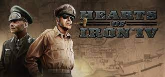
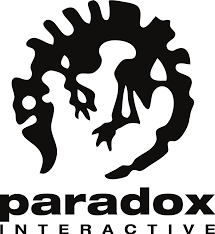
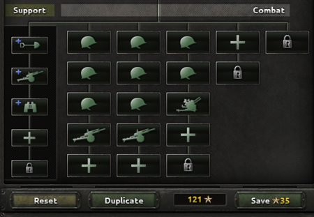

Hearts of Iron 4 is a world-class strategy game with multiple players still playing it to this day. This game was developed in 2016 by Paradox Interactive.
Paradox Interactive is a Swedish company based in Stockholm that develops computer games, primarily global historical strategy games. Subsequently, she also began to publish games (Knights of Honor, Galactic Civilizations II: Dread Lords, Rush for Berlin [en], Hearts of Iron).The company's lead game designer and programmer is Johan Andersson (Swed. Johan Andersson).Originally part of Paradox Entertainment.Since October 26, 2015, he has owned books and role-playing games, White Wolf Publishing.
The game has many different mechanics of the fleet, divisions, political influence, etc.
Division MechanicsThe division is the primary unit depicted on the map during gameplay. Divisions operate inside of a province, may be transported via naval invasion, and may participate in land combat.
The composition of each division is specified by its division template. Each country starts with one or more division templates that may be used to order recruiting and deployment of new land units. Division templates may be created and modified by spending Army experiencearmy experience. New templates may be created by either using the Duplicate button to make a duplicate of a template, giving it a name different from existing templates, and then making modifications to a template as described below, or by selecting the name and pressing "Create Empty". Certain technologies that unlock new battalion types, such as mountaineers, also create basic templates for them. Land experience is not charged until the changes are saved using the Save button on which the total cost is also shown, so players can experiment and analyze the results of changes before making a decision. When a template is changed, all divisions that are based on that template immediately place orders for additional needed manpower and equipment and return any manpower or equipment that is now surplus to the national stockpile. It is wise to have any needed manpower and equipment ready in the national stockpile before changing the template of a division that may be expected to face combat in the near future. It may be prudent to upgrade units one at a time. Divisions can not be divided into smaller game units, but with Waking the TigerWaking the Tiger, it is possible to merge understrength divisions of the same template in the Army window using the Consolidation button if the selected divisions are independent of any army command. Such consolidation can be extremely useful for a country low on manpower or equipment that needs to field adequately sized divisions. The template a division uses can be changed at any time by selecting the unit helmet, tank or other unit symbol icon in the Unit Details screen when that division's template is open and choosing any of the templates available there. Each division consists of up to five combat regiments and five support companies. In turn, each combat regiment is composed of up to five battalions. It costs 5 XP to add a battalion to a division; regardless if it is the same or new regiment. Adding a battalion of a different unit type (infantry, mobile, or armored) adds a penalty of 20 XP per additional unit type.
 You can find more about it at this link.Each country has one of the four ideologies. These are difficult to change and affect under what circumstances a country can perform certain actions, and what happens to occupied territory.The game has many different ideologies such as Communism, Democracy, Neutrality, Fascism.
Conservatism Considering rapid changes to society to be potentially harmful, conservatism espouses tradition and moderate reforms,
sometimes advocating a return to old moral values.
Liberalism: With a long philosophical tradition of valuing personal liberty, liberalism views safeguarding these rights as the primary
function of the state.
Socialism: Striving for equality and a socialist state by reformist means, democratic socialism aims to abolish or mitigate the effects of
capitalism with public mandate.
Marxism: Encompassing a broad spectrum of economic and historical views, Marxist politics seek to apply the theories of Karl Marx to
political practice. Class struggle and the need for transition to a society based on common ownership of the means of production
characterize these ideologies.
Leninism: A political ideology based in Marxist thought, Leninism seeks to establish a socialist state by a vanguard party leading a
revolution overthrowing capitalist society. Once in power, the party rules through a system whereby policies are open for internal debate
until a decision has been made.
Stalinism: Identifying as a form of government applying and developing Marxist-Leninist policies emphasizes rapid industrialization and
collectivization as well as the need for a strong authoritative socialist state to purge any counter-revolutionary elements.
Anti-Revisionism: A reaction to the many ideologies claiming to be successors to Marxism, Anti-Revisionism advocates retaining key
elements of original revolutionary theory. Mainly opposing incorporation of capitalist economic elements into socialist states, the
ideology is defined as much by what it isn't as what it is.
Anarchist Communism: An ideology embracing the idea of communism as a stateless society, Anarchist Communism eschews the idea of a
transitionary socialist state and favors a society based on voluntary associations and mutual aid.
Nazism: Rooted in extreme nationalism, National Socialism is driven by ideas of Germanic supremacy. It promotes aggressive expansionism
and a totalitarian state where the people are united under a leader with absolute power, the Führer.
Generic Nazism: Rooted in extreme nationalism, National Socialism is driven by ideas of racial supremacy. It promotes aggressive
expansionism and a totalitarian state where the people are united under a leader with absolute power.
Fascism: Encompassing a variety of ultra-nationalist movements, fascism typically venerates devotion to the state and uniting the people
under a strong leader. Falangism: An authoritarian ideology with traits of fascism and conservatism, Falangism values national and
Catholic identity.
Rexism: Strongly opposed to both liberal and communist ideals, Rexism is a staunchly conservative nationalist movement who advocate a
corporatist economic policy. Employing increasingly populist and authoritarian rhetoric, their ideals are shifting closer to other fascist
movements.
Despotic: Despotism is a form of government in which a single person rules with absolute power.
Oligarchic: Oligarchy is a form of government in which a group of people rule with absolute power.
Moderatism: Moderatism is a form of government which avoids the extremes of left and right by taking a moderate position or course of
action.
Centrism: Centrism is a form of government which wants to achieve common sense solutions that appropriately address current and future
needs, that support the public trust and serve the common good with consideration of risk and capacity in context of these needs.
Anarchism: Anarchism is the rejection of authority itself, promoting the division of society into self-managing and self-governing
collectives instead of a singular, centralized state.
Aircraft are equipment that can be used to equip air wings and are produced in military factories (or sometimes rocket sites). For details on how aircraft statistics affect air wing operation, see air missions and air wing. All aircraft start with 80% reliability unless otherwise noted.